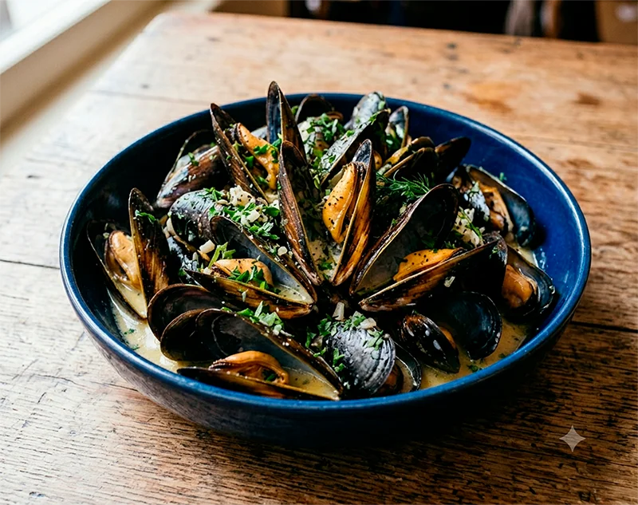

Receta saludable
Mejillones a la francesa
Una forma muy sencilla de preparar mejillones, cocidos con cebolla, pimienta y un chorrito de vinagre para conseguir un plato ligero y con sabor a mar.
Ingredientes
- 12 mejillones
- 1 cebolla
- Pimienta molida
- Un chorrito de vinagre
Preparación
- Limpia bien los mejillones para retirar restos de suciedad y posibles barbas.
- Corta la cebolla en rodajas.
- Pon los mejillones en una olla con la cebolla y un poco de agua, lo justo para facilitar la cocción.
- Añade una pizca de pimienta molida y un chorrito de vinagre.
- Tapa la olla y cocina hasta que los mejillones se abran.
- Retira los que no se hayan abierto y sirve el resto bien calientes, con un poco del jugo de cocción por encima si te apetece.
Consejo práctico
No los cocines más de la cuenta: en cuanto se abran, retíralos del fuego para que queden jugosos y no se resequen.